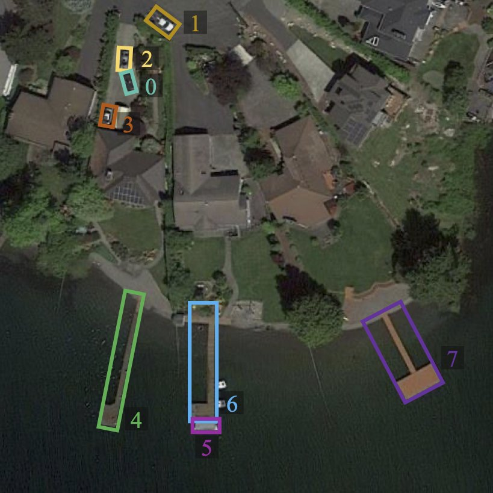

Disaster response
“How many vehicles are on the bridge?”
Fast access and damage checks for emergency teams.
MSc project · Vision & Language · Queen’s University Belfast
Ask a satellite image a question in plain English. Get the answer, and the boxes that prove it.

Q: How many harbors are visible?
3
VRSBench sample, with its ground-truth object boxesAt a glance
Best result: the 7B model fine-tuned with QLoRA, up from 51.3% zero-shot. An LLM judge scores it at 66.7%.
A 3B model fine-tuned with QLoRA nearly matches the 7B zero-shot model, at under half the size.
Counting accuracy of the 3B model after QLoRA fine-tuning.
Of the answers the self-check flags are truly wrong. It flags 11.8% of answers.
1,000 questions from the VRSBench test split, scored by exact match unless stated otherwise.
Why it matters
After a flood, or before a census, there are more satellite tiles than analysts can inspect. General vision-language models learn mostly from ground-level photos; seen from above, objects are tiny, rotated and densely packed. OrbitAsk lets anyone ask what is in a tile and check the answer against the boxes it was based on.
“How many vehicles are on the bridge?”
Fast access and damage checks for emergency teams.
“How many buildings are in this block?”
Building counts that feed population estimates.
“How many cars are parked by the stadium?”
Parking, traffic and land-use monitoring.
“How many ships are docked?”
Asset and activity monitoring at scale.
These are target uses. Today’s model is trained and tested on VRSBench, which covers 26 object categories such as vehicles, ships, bridges, harbors and storage tanks.
How it works
Each question runs through four stages. The order matters: the language model answers using the objects the detector found, and a final check decides whether a person should look again.
A 512 × 512 px aerial tile and a plain-English question.
12 question typesAn open-set detector draws boxes around the objects the question names.
1.39 boxes per question on averageA 3B or 7B vision-language model, fine-tuned with QLoRA (4-bit base + small LoRA adapters), answers from the image and boxes.
7B in 4-bit ≈ 6.5 GB of GPU memoryA consistency check flags answers that look unreliable so a person can review them.
flags 11.8% · 75% of flags are real errorsThe stages were evaluated separately. Testing the full pipeline end to end is the next milestone.
Explore an example
VRSBench pairs every image with object references (each tied to a box), question–answer pairs and a detailed caption. Tap an object to see its box, or open a question to reveal the benchmark answer.
Image and annotations from VRSBench [1]. Box colours and numbers are the benchmark’s own.
Object references
Questions and benchmark answers
3
Small vehicle
No
Caption, in short
A waterfront with homes, lawns and driveways, three harbors along the shore, a ship docked at the bottom edge, and small vehicles parked near the houses.
Results
Every model answered the same 1,000 VRSBench test questions. Toggle models on the right to compare them on each question type.
Exact match, 1,000 test questions
n = number of questions of that type in the sample
Exact match is strict: “aircraft” for “airplane” counts as wrong. An LLM judge that accepts synonyms scores the 7B + QLoRA model at 66.7%, the 7B zero-shot model at 62.6% and the 7B + boxes model at 58.2%. Per-type results for the 7B + QLoRA model are not shown here.
Baselines: always answering the most common answer for each question type scores 34.5% (full test split); random guessing scores 23.1%.
Real answers
Each card is a real question from the test sample, with the benchmark answer and what the models said. VRSBench image IDs are shown so results can be traced.
What I learned
QLoRA lifted the 3B model from 44.3% to 50.8% and the 7B model from 51.3% to 56.7%. For the 3B, much of the gain is counting, and part of it is learning the benchmark’s short answer style; its reasoning score dropped from 71.0% to 61.3%.
Adding detector boxes helped size questions (+19.2 points) but hurt counting (−5.8) and position (−9.9), so overall accuracy fell from 51.3% to 49.0%. How boxes are passed to the model needs to change.
For 19.7% of questions Grounding DINO returned no box at all. These misses are the main failure mode to fix.
When it flags an answer it is usually right, but it catches only about one in six wrong answers. Temperature scaling reduced calibration error from 0.479 to 0.413 (ECE).
Roadmap
12 question types, running offline in 4-bit on an 8 GB laptop GPU, with a demo app that draws the detected boxes.
Fix detector misses, pass boxes to the model more carefully, and evaluate the full pipeline on the whole test set.
Adapt to flood and disaster imagery, then offer a web demo and an API for councils, NGOs and emergency services.
Looking for pilot partners, disaster imagery and GPU compute. Feedback from remote-sensing and emergency-response teams is very welcome.
References